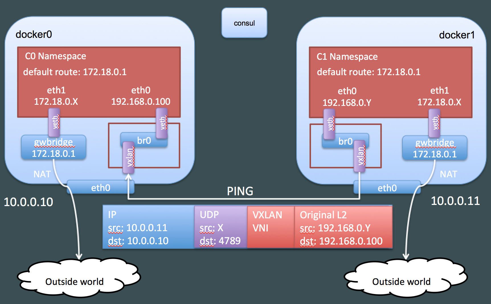
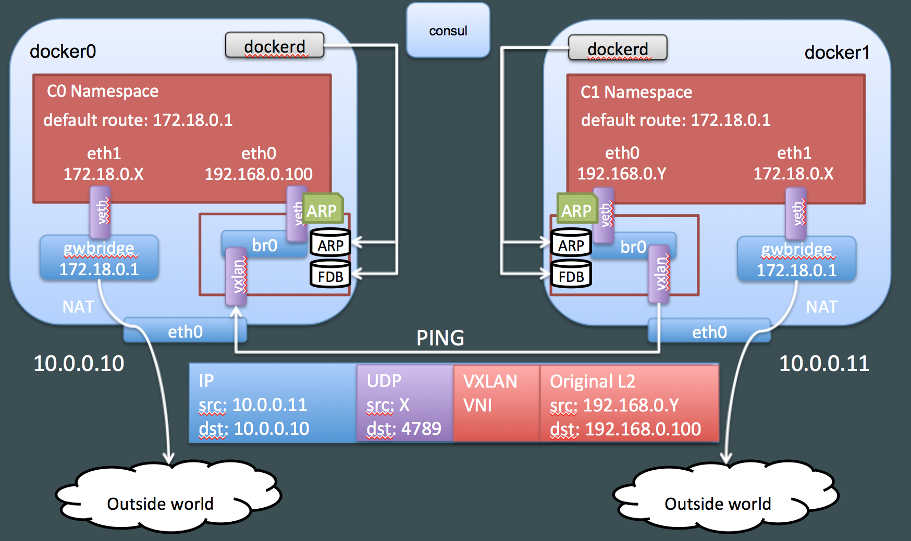
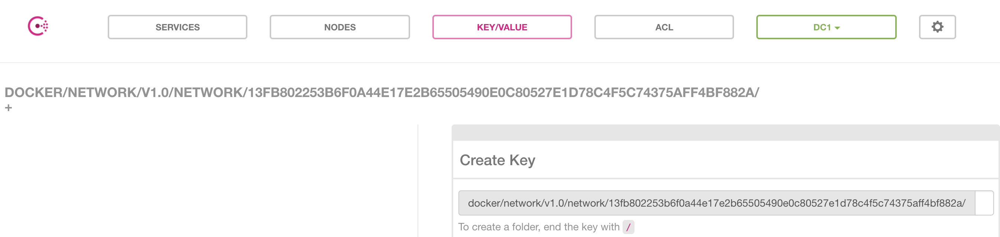
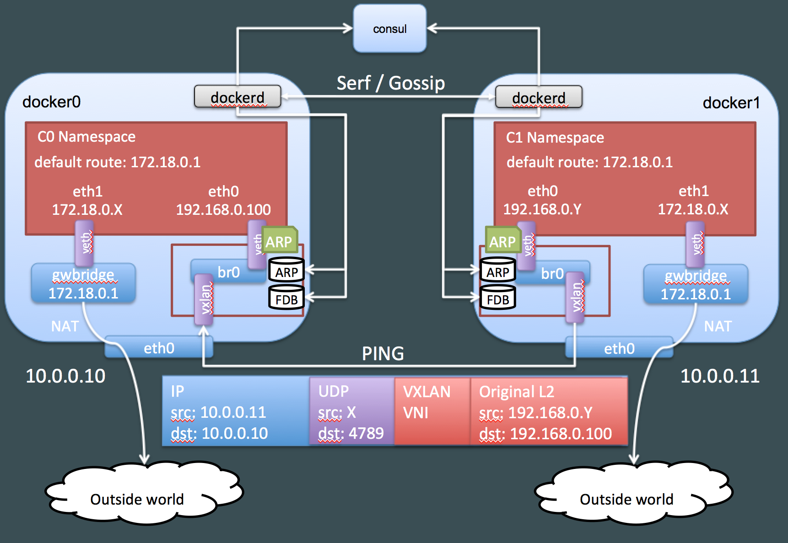
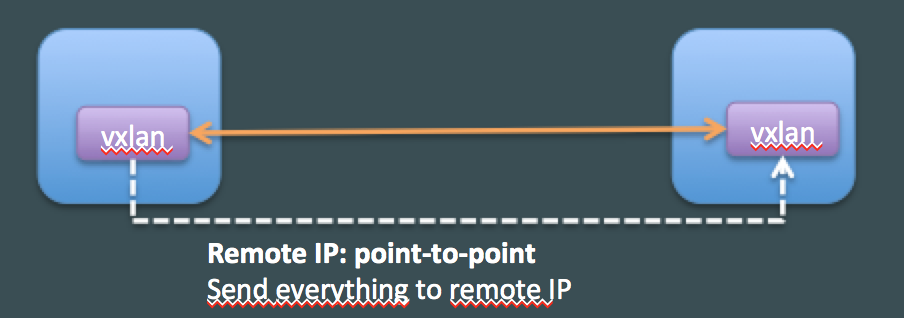
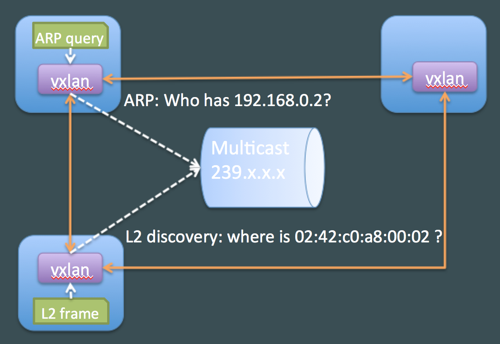

Introduction
In part 1 of this blog post we have seen how Docker creates a dedicated namespace for the overlay and connect the containers to this namespace. We have also seen that the overlay communication between Docker hosts uses VXLAN. In this second post, we will look at VXLAN in more details and how Docker uses it.
What is VXLAN ?
From wikipedia:
Virtual Extensible LAN (VXLAN) is a network virtualization technology that attempts to improve the scalability problems associated with large cloud computing deployments.
VXLAN is a tunneling technology which encapsulates L2 frames inside UDP packets usually sent on port 4789. It was originally developed by VMware, Arista and Cisco. The main goal of VXLAN was to simplify cloud deployments which require multi-tenancy at the L2 layer. It provides:
- Tunneling L2 over L3 to avoid the necessity of L2 connectivity between all hosts in the cluster
- More than 4096 isolated networks (VLAN IDs are limited to 4096)
On Linux, Openvswitch supports VXLAN and the kernel has native support for it since version 3.7. In addition, VXLAN works with network namespaces since kernel 3.16.
Here is what a VXLAN packet looks like: VxLAN 数据包结构图
The outer IP packet is used for communication between hosts and the original L2 frame is encapuslated in a UDP packet with an additional VXLAN header for metadata (in particular the VXLAN ID).
We can verify that traffic between our hosts is using VXLAN with tcpdump. Let’s ping C0 from a container on docker1 and capture traffic on docker0: 1
2
3
4
5
6
7
8
9
10
11
12
13docker1:~$ docker run -it --rm --net demonet debian ping 192.168.0.100
PING 192.168.0.100 (192.168.0.100): 56 data bytes
64 bytes from 192.168.0.100: icmp_seq=0 ttl=64 time=0.680 ms
64 bytes from 192.168.0.100: icmp_seq=1 ttl=64 time=0.503 ms
docker0:~$ sudo tcpdump -pni eth0 "port 4789"
tcpdump: verbose output suppressed, use -v or -vv for full protocol decode
listening on eth0, link-type EN10MB (Ethernet), capture size 262144 bytes
12:55:53.652322 IP 10.0.0.11.64667 > 10.0.0.10.4789: VXLAN, flags
Each packet generates two lines of output in tcpdump because due to VXLAN frames analysis (a few fields have been removed for readability):
- the
outerframe, with IP10.0.0.11and10.0.0.10(docker hosts) - the
innerframe, with IP192.168.0.100and192.168.0.2(our containers) and an ICMP payload. We can also see the MAC addresses of our containers. Docker overlay 网络连接示意图
Resolving container names and location
We have seen that we can ping containers on docker0 from containers on docker1 using VXLAN but we do not know yet how containers on each host can map IP addresses to MAC addresses and how the L2 frames are forwarded to the appropriate host.
Let’s create a container on docker1 and look at its ARP table: 1
2docker1:~$ docker run -it --rm --net demonet debian bash
root@6234b23677b9:/# ip neighbor show
There is no ARP information inside the container. If we ping C0 the container will generate ARP traffic. Let’s first see how this traffic is seen in the overlay namespace on docker0: 1
docker0:~$ sudo nsenter --net=$overns tcpdump -pni any "arp"
Going back to our container, we will try to ping C0, which will generate an ARP packet: 1
root@6234b23677b9:/# ping 192.168.0.100
1
docker1:~$ docker run -it --rm --net demonet debian bash
1
2
3
4
5docker1:~$ sudo ls -1 /var/run/docker/netns
102022d57fab
x-13fb802253
docker1:~$ overns=/var/run/docker/netns/x-13fb802253
docker1:~$ sudo nsenter --net=$overns tcpdump -peni any "arp"
When we ping from the window with the container, here is what we see in tcpdump: 1
2
3
419:16:40.658369 Out 02:42:c0:a8:00:02 ethertype ARP (0x0806), length 44: Request who-has 192.168.0.100 tell 192.168.0.2, length 28
19:16:40.658352 B 02:42:c0:a8:00:02 ethertype ARP (0x0806), length 44: Request who-has 192.168.0.100 tell 192.168.0.2, length 28
19:16:40.658371 In 02:42:c0:a8:00:64 ethertype ARP (0x0806), length 44: Reply 192.168.0.100 is-at 02:42:c0:a8:00:64, length 28
19:16:40.658377 Out 02:42:c0:a8:00:64 ethertype ARP (0x0806), length 44: Reply 192.168.0.100 is-at 02:42:c0:a8:00:64, length 28
We can see the ARP query and answer, which means the overlay namespace has the information and that it acts as an ARP proxy. We can easily verify this: 1
2docker1:~$ sudo nsenter --net=$overns ip neigh show
192.168.0.100 dev vxlan0 lladdr 02:42:c0:a8:00:64 PERMANENT
The entry is flagged as PERMANENT which means it is static and was “manually” added and not the result of an ARP discovery. What happens if we create a second container on docker0? 1
2
3
4
5docker0:~$ docker run -d --ip 192.168.0.200 --net demonet --name C1 debian sleep 3600
docker1:~$ sudo nsenter --net=$overns ip neigh show
192.168.0.200 dev vxlan0 lladdr 02:42:c0:a8:00:c8 PERMANENT
192.168.0.100 dev vxlan0 lladdr 02:42:c0:a8:00:64 PERMANENT
If we look at the configuration of the vxlan interface, we can see that it has the proxy flag set which explains this behavior (we will look at the other options later). 1
2
3
4
5docker1:~$ sudo nsenter --net=$overns ip -d link show vxlan0
xx: vxlan0: <BROADCAST,MULTICAST,UP,LOWER_UP> mtu 1450 qdisc noqueue master br0 state UNKNOWN mode DEFAULT group default
link/ether 5a:71:8f:a4:b8:1b brd ff:ff:ff:ff:ff:ff promiscuity 1
vxlan id 256 srcport 10240 65535 dstport 4789 proxy l2miss l3miss ageing 300
bridge_slav
What about the location of the MAC address (on which host is 02:42:c0:a8:00:64)? We can look at the bridge forwarding database in the overlay namespace: 1
2
3
4
5
6
7docker1:~$ sudo nsenter --net=$overns bridge fdb show
5a:71:8f:a4:b8:1b dev vxlan0 vlan 0 master br0 permanent
9a:ad:35:64:39:39 dev veth2 vlan 0 master br0 permanent
02:42:c0:a8:00:c8 dev vxlan0 dst 10.0.0.10 self permanent
02:42:c0:a8:00:64 dev vxlan0 dst 10.0.0.10 self permanent
33:33:00:00:00:01 dev veth2 self permanent
01:00:5e:00:00:01 dev veth2 self permanent
We can see that the MAC addresses for our two containers on docker0 are in the database with a permanent flag. This information is also dynamically populated by Docker. Docker overlay 网络连接示意图
Distribution of MAC/FDB information
We have just discovered that Docker populates MAC and FDB information automatically. How is this done?
We can first look at the content of Consul. What is stored in there? Docker overlay 网络连接示意图
The network that was empty when we started now contains information and we can recognize the id of our overlay: 13fb802253b6f0a44e17e2b65505490e0c80527e1d78c4f5c74375aff4bf882a.
The Consul UI does not display keys when they are too long but we can use curl to look at the content (Docker stores the information as JSON which is based64 encoded and Consul answers queries in JSON): 1
2
3
4
5
6
7
8
9
10
11
12
13
14
15
16
17
18
19
20
21
22
23
24
25
26net=$(docker network inspect demonet -f {{.Id}})
curl -s http://consul:8500/v1/kv/docker/network/v1.0/network/${net}/ | jq -r ".[0].Value" | base64 -d | jq .
{
"addrSpace": "GlobalDefault",
"attachable": false,
"created": "2017-04-23T16:33:02.442759329Z",
"enableIPv6": false,
"generic": {
"com.docker.network.enable_ipv6": false,
"com.docker.network.generic": {}
},
"id": "13fb802253b6f0a44e17e2b65505490e0c80527e1d78c4f5c74375aff4bf882a",
"inDelete": false,
"ingress": false,
"internal": false,
"ipamOptions": {},
"ipamType": "default",
"ipamV4Config": "[{\"PreferredPool\":\"192.168.0.0/24\",\"SubPool\":\"\",\"Gateway\":\"\",\"AuxAddresses\":null}]",
"ipamV4Info": "[{\"IPAMData\":\"{\\\"AddressSpace\\\":\\\"GlobalDefault\\\",\\\"Gateway\\\":\\\"192.168.0.1/24\\\",\\\"Pool\\\":\\\"192.168.0.0/24\\\"}\",\"PoolID\":\"GlobalDefault/192.168.0.0/24\"}]",
"labels": {},
"name": "demonet",
"networkType": "overlay",
"persist": true,
"postIPv6": false,
"scope": "global"
}
- name: demonet
- id: 13fb802253b6f0a44e17e2b65505490e0c80527e1d78c4f5c74375aff4bf882a
- subnet range: 192.168.0.0/24
We can also retrieve information about endpoints but the curl queries are hard to read so we will use this small python script (available on the GitHub repository) to retrieve this information: 1
2
3
4
5
6
7
8
9
10
11
12
13
14
15
16
17import consul
import json
# First we connect to consul
c=consul.Consul(host="consul",port=8500)
# We retrieve all endpoint keys from Consul
(idx,endpoints)=c.kv.get("docker/network/v1.0/endpoint/",recurse=True)
epdata=[ ep['Value'] for ep in endpoints if ep['Value'] is not None]
# We print some interesting data on these endpoints
for data in epdata:
jsondata=json.loads(data.decode("utf-8"))
print("Endpoint Name: %s" % jsondata["name"])
print("IP address: %s" % jsondata["ep_iface"]["addr"])
print("MAC address: %s" % jsondata["ep_iface"]["mac"])
print("Locator: %s\n" % jsondata["locator"])
The script displays the main pieces of information on the container endpoints:
- Name
- IP address
- MAC address
- Locator: the host where the container is located
Here is what we find out about our setup: 1
2
3
4
5
6
7
8
9
10docker1:~$ python/dump_endpoints.py
Endpoint Name: adoring_einstein
IP address: 192.168.0.2/24
MAC address: 02:42:c0:a8:00:02
Locator: 10.0.0.11
Endpoint Name: C1
IP address: 192.168.0.200/24
MAC address: 02:42:c0:a8:00:c8
Locator: 10.0.0.10
Consul is used as a reference store for all static information. However, it is not enough to dynamically notify all hosts when a container is created. It turns out that Docker uses Serf and its Gossip protocol to achieve this. We can easily verify this by subscribing to serf events on docker0 and create a container on docker1: 1
2
3
4
5
6
7docker0:~$ serf agent -bind 0.0.0.0:17946 -join 10.0.0.11:7946 -node demo -log-level=debug -event-handler=./serf.sh
#########################################
New event: member-join
demo 10.0.0.10
docker0 10.0.0.10
docker1 10.0.0.11
#########################################
I removed most of the output to focus on relevant information: we can see all the nodes participating in Gossip.
Serf is started with the following options:
- bind: to bind a port different from 7946 (already used by Docker)
- join: to join the serf cluster
- node: to give an alternate name to the node (docker0 is already taken)
- event-handler: a simple script to display serf events
- log-level=debug: required to see the output of the event handler script
The serf.sh script has the following content: 1
2
3echo "New event: ${SERF_EVENT}"
while read line; do
printf "${line}\n"
Let’s now create a container on docker1 and look at the ouput on docker0: 1
docker1:~$ docker run -it --rm --net demonet debian sleep 10
On docker0 we see: 1
2New event: user
join 192.168.0.2 255.255.255.0 02:42:c0:a8:00:02
Then after 10s when the container exits on docker1: 1
2New event: user
leave 192.168.0.2 255.255.255.0 02:42:c0:a8:00:02
The Docker daemon subscribes to these events to create and remove entries in the ARP and FDB tables. Docker overlay 网络连接示意图
In Swarm mode, Docker does not rely on Serf to synchronize information between nodes but relies on its own implementation of the Gossip protocol. It achieves exactly the same thing.
Alternate VXLAN resolution options
The Docker daemon automatically populates ARP and FDB tables based on information received through the Gossip protocol via Serf, and relies on ARP proxying by the VLXAN interface. However, VXLAN also gives us other options for discovery.
Point-to-point resolution
When VXLAN is configured with the “remote » option, it sends all unknown traffic to this IP. This setup is very simple but limited to tunnels between two hosts. Docker overlay 网络连接示意图
Multicast resolution
When VXLAN is configured with the “group » option, it sends all unknown traffic to this multicast group. This setup is very efficient but requires multicast connectivity between all hosts, which is not always possible in particular when using public cloud. Docker overlay 网络连接示意图
For more detailed information on VXLAN configuration on Linux, I recommand this very complete post: VXLAN & Linux.
Conclusion
In the first two parts of this post, we have seen how the Docker overlay works and the technologies it relies on. In the third and final part, we will see how we can build our own overlay from scratch using only Linux commands.